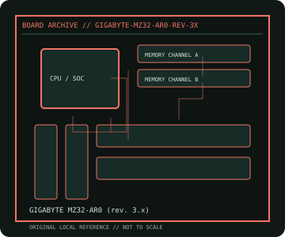

[ INDIVIDUAL COMPONENT // MOTHERBOARDS ]
GIGABYTE MZ32-AR0 (rev. 3.x)
Single-socket AMD EPYC SP3 server board, PCB revision 3.x. This record documents the named model and its documented variants; confirm the PCB revision, submodel and firmware on the physical unit.

REVISION WARNING: Similar model names and PCB revisions may have different processors, connectors or firmware. Read the silkscreen and assembly code; use the support files for that exact board variant.
Specifications
| Catalog subcategory | Workstation and server boards |
|---|---|
| Exact model / era | GIGABYTE MZ32-AR0 (rev. 3.x) — Single-socket AMD EPYC SP3 server board, PCB revision 3.x |
| CPU and socket / SoC | One AMD EPYC 7002/7003 SP3 processor supported by PCB rev. 3.x and BIOS |
| Chipset / platform | AMD EPYC SoC; ASPEED BMC |
| Memory | Eight DDR4 ECC DIMM slots, eight-channel; capacity, RDIMM/LRDIMM and speed depend on processor |
| Slots and connectivity | SSI-EEB; PCIe 4.0 slots, M.2, SATA, dual 10GbE, dedicated management LAN, VGA and USB; exact slot/riser options depend on SKU |
| Firmware | GIGABYTE server BIOS/BMC firmware is revision-specific. Use MZ32-AR0 Rev. 3.x CPU support and firmware page. |
Compatibility and revision notes
Rev. 3.x is not interchangeable with prior MZ32-AR0 revisions; EPYC 7003 and memory support must be checked by board revision and BIOS.
Socket, connector shape and family branding alone do not establish compatibility. Verify the exact processor list, minimum BIOS, memory population table, power input, dimensions, and shared-lane behavior in the cited manual before installation.
Preservation and repair
Record BMC credentials and MAC labels before reset. Inspect SP3 carrier, socket pins, DIMM channel placement, VRM airflow and chassis riser compatibility; do not cross-flash earlier revisions.
For archival preservation, photograph the PCB, labels, connectors and included accessories before cleaning. Record serial/date codes, firmware versions, known faults, prior repairs and test conditions; use ESD-safe handling and do not power a board with loose conductive hardware beneath it.
Sources & further reading
- GIGABYTE MZ32-AR0 (rev. 3.x) — product/manual referenceModel-specific platform, board layout and interface reference.
- GIGABYTE MZ32-AR0 (rev. 3.x) — support and firmware resourcesSupport documentation; match the PCB revision, CPU support list and firmware release to the physical board.
Manufacturer/model documentation is the primary reference. Where vendor support is archived, match its revision notes to the board and do not cross-flash firmware from a similar product.